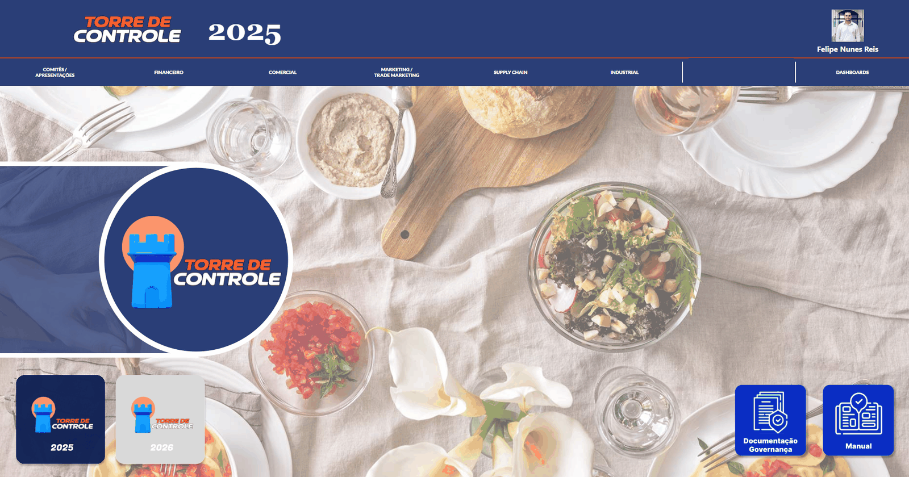
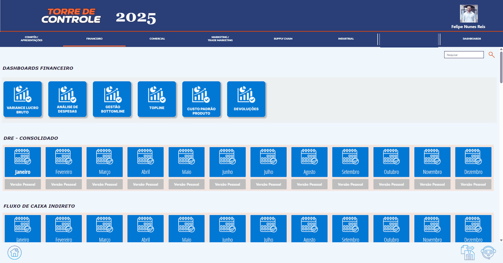
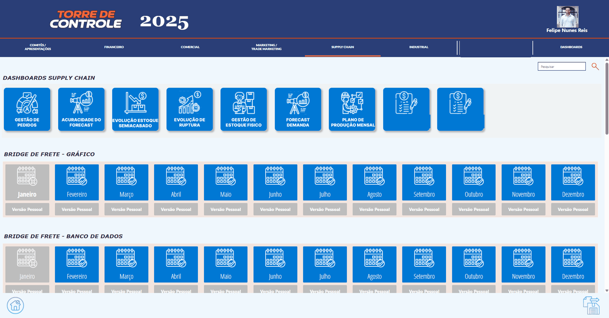
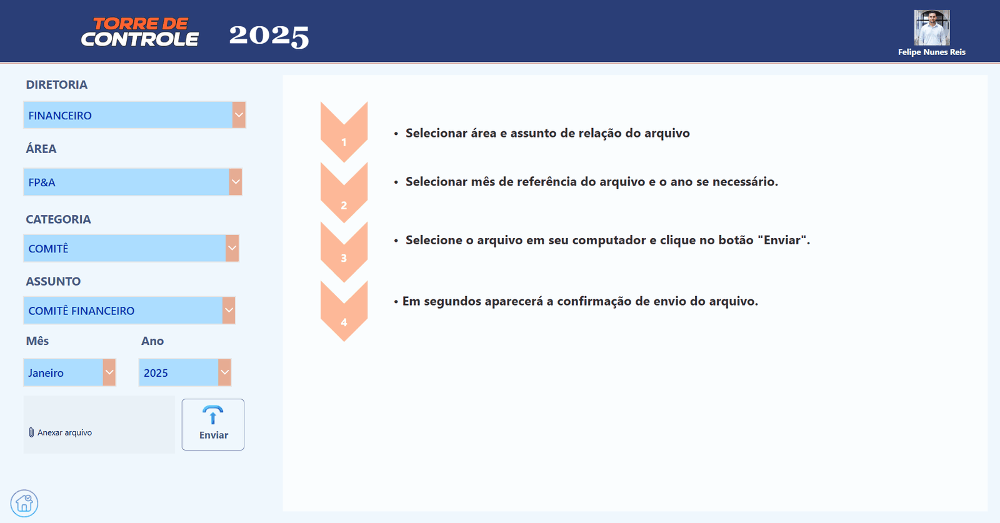

Overview
Every month, departments produce reports, committee presentations and dashboards that leadership needs to find quickly. The Control Tower is a Power Apps canvas app that organizes all of them in one place: a hub by department, a subject-by-month grid for each area, a "personal copy" button that drops the file into the user's own OneDrive, and an upload screen that only the owner of each area can see. Behind it, SharePoint document libraries hold the files and a permissions list decides who can publish.
Context and problem
Executive reports, committee decks and monthly documents came from many departments and lived in many places: shared folders, e-mail threads, personal drives. Finding "the March finance report" meant asking around. There was also no control over who could publish an official version, so duplicates and outdated files were common.
Leadership wanted a single entry point with a predictable structure (area → subject → year → month), history across years, and governance: one owner per area, one official file per period.
My role
I designed the interface in Figma and built the whole solution: the Power Apps screens and logic, the SharePoint library and list structure, the two Power Automate flows the app calls, and the permission model. I also wrote the user manual and the governance policy that the app links to.
Architecture
Data flow in short
- On load, the app reads the user's permission rows and the file index for the selected year into local collections. Every screen filters those collections; the libraries are not queried again per click.
- "Personal copy" calls the copy flow with area, subject, year, month, file name and the user's e-mail. The flow copies the file into the user's OneDrive, recreating the folder structure, and returns a small JSON result.
- "Upload" submits an attachment to a staging list, then the upload flow moves it to the right library folder and confirms back to the app.
Key features
Department hub with year switcher
The home screen shows one tile per department and a year selector. Switching the year re-filters every grid; some areas (daily tracking, HR) are pinned to the current year by rule. Links to the user manual and the governance policy live here too.

Subject × month grids
Each area lists its subjects (for finance: consolidated statements, indirect cash flow, and so on). Every subject is a row of twelve months. A month tile is enabled only when a file exists for that period; one click opens it.

Personal copy in one click
Under each month there is a "personal version" button. The first click runs the copy flow and the button turns blue; later clicks open the copy directly. The app tracks what each user already copied, locks the screen while the flow runs, and reports errors and timeouts.

Upload by area owner
The upload screen checks the user's permission rows. Non-owners see a notice; owners see the selectors (area → subject → year → month → file). The upload flow stores the file in the right folder and the app shows a timed confirmation.

Technical highlights
Snippets below are rewritten with generic names; they show the logic, not the production code.
Calling a flow from the app without leaving the user guessing
Power Automate calls can take seconds and can fail. The button sets a "busy" flag that disables the screen, wraps the call in an error handler, reads the flow's JSON result, and updates a local collection so the button changes color immediately, without re-querying SharePoint.
// Already copied before? Open the user's copy directly.
If(varAlreadyCopied,
Launch(varPersonalCopyUrl, Blank(), LaunchTarget.New),
Set(varBusy, true);
IfError(
Set(varResult, CopyToOneDrive.Run(area, subject, year, month, fileName, User().Email)),
Notify("Please try again in a few seconds.", NotificationType.Warning);
Set(varBusy, false)
);
If(!IsBlank(varResult.error),
Notify(varResult.error, NotificationType.Error),
Collect(colMyCopies, {Subject: subject, Year: year, Month: month});
Launch(varPersonalCopyUrl, Blank(), LaunchTarget.New)
);
Set(varBusy, false)
)Role-based upload driven by one list
A permissions list maps users to the areas they own. On the upload screen the app builds the set of areas the user may publish to; a blank area means "all areas". Every selector and the send button are visible only when that set is not empty, so there is one rule to maintain.
ClearCollect(colMyAreas,
If(!IsEmpty(Filter(colMyPermissions, IsBlank(Area))),
Distinct(colAreas, Name), // blank = all areas
Distinct(Filter(colMyPermissions, !IsBlank(Area)), Area) // otherwise, only assigned areas
)
);
// On every upload control: Visible = !IsEmpty(colMyAreas)Buttons that reflect the data
A month tile is enabled when the file index contains a row for that subject, month and year; the "personal version" button is blue when the user's copies collection contains a matching row. Both are simple LookUp expressions on local collections, which keeps the grids fast even with twelve months × many subjects.
DisplayMode = If(!IsBlank(LookUp(colFiles,
Subject = ThisItem.Subject && Month = ThisItem.Month && Year = varYear)),
DisplayMode.Edit, DisplayMode.Disabled)
Fill = If(!IsBlank(LookUp(colMyCopies,
Subject = ThisItem.Subject && Month = ThisItem.Month && Year = varYear)),
ColorBlue, ColorGray)One scale factor for twelve screens
The app targets tablets in portrait and landscape and desktop browsers. Instead of per-control responsive rules, every size, position and font is multiplied by a single scale variable computed from the screen size, so the Figma layout holds on every device and new screens follow the same rule.
Challenges and how I solved them
Challenge
Flow calls are slow and sometimes time out, and users clicked twice or thought nothing happened.
Solution
A busy flag locks the UI, the call sits inside an error handler with a clear message, and a local collection updates the button state the moment the flow returns.
Challenge
Who may publish what was tribal knowledge spread across people and folders.
Solution
A single permissions list in SharePoint. The app reads it to show or hide the upload controls, and the same list documents the governance policy.
Challenge
Twelve screens with the same header, navigation and grids had to look identical on tablets and desktops.
Solution
A Figma design first, then one scale variable applied to every control. New areas are added by copying a screen and changing its data source.
Challenge
History across years without cluttering areas that only make sense for the current year.
Solution
A year switcher on the hub that every grid respects, plus per-area rules that pin some areas to the current year.
Results
- One portal for leadership documents across all departments, with a predictable structure.
- Finding a report changed from asking around to three clicks: area, subject, month.
- Publishing is governed: one owner per area, one official file per period.
- Personal copies in OneDrive keep people from editing the official version.
Tools
- Power Apps (canvas)
- Power Fx
- Collections
- Power Automate
- SharePoint document libraries and lists
- OneDrive
- Power BI
- Figma